i.e. 自学计算机科学
无意中看到这篇文章，感觉挺不错的，转载一下，方便摘录！
简介
本文档是对 TeachYourselfCS 内容的中文翻译，原作者为 Ozan Onay 和 Myles Byrne 。
如果你是一个自学成才的工程师，或者从编程培训班毕业，那么你很有必要学习计算机科学。幸运的是，不必为此花上数年光阴和不菲的费用去攻读一个学位：仅仅依靠自己，你就可以获得世界一流水平的教育 💸。
互联网上，到处都有很多的学习资源，然而精华与糟粕并存。你所需要的，不是一个诸如“200+免费在线课程”的清单，而是以下问题的答案：
- 你应该学习 哪些科目 ，为什么？
- 对于这些科目， 最好的书籍或者视频课程 是什么？
在这份指引中，我们尝试对这些问题做出确定的回答。
书籍视频
大致按照列出的顺序，借助我们所建议的教材或者视频课程（但是最好二者兼用），学习如下的九门科目。目标是先花 100 到 200 个小时学习完每一个科目，然后在你职业生涯中，不时温习其中的精髓 🚀。
| 科目 | 为何要学？ | 最佳书籍 | 最佳视频 |
|---|---|---|---|
| 编程 | 不要做一个“永远没彻底搞懂”诸如递归等概念的程序员 | 《计算机程序的构造和解释》 | Brian Harvey’s Berkeley CS 61A |
| 计算机系统结构 | 如果你对于计算机如何工作没有具体的概念，那么你所做出的所有高级抽象都是空中楼阁 | 《深入理解计算机系统》 | Berkeley CS 61C |
| 算法与数据结构 | 如果你不懂得如何使用栈、队列、树、图等常见数据结构，遇到有难度的问题时，你将束手无策 | 《算法设计手册》 | Steven Skiena’s lectures |
| 数学知识 | 计算机科学基本上应用数学的一个“跑偏的”分支，因此学习数学将会给你带来竞争优势 | 《计算机科学中的数学》 | Tom Leighton’s MIT 6.042J |
| 操作系统 | 你所写的代码，基本上都由操作系统来运行，因此你应当了解其工作原理 | 《操作系统导论》 | Berkeley CS 162 |
| 计算机网络 | 互联网已然势不可挡：理解工作原理才能解锁全部潜力 | 《计算机网络：自顶向下方法》 | Stanford CS 144 |
| 数据库 | 对于多数重要程序，数据是其核心，然而很少人理解数据库系统的工作原理 | 《Readings in Database Systems》 （暂无中文译本） | Joe Hellerstein’s Berkeley CS 186 |
| 编程语言与编译器 | 若你懂得编程语言和编译器如何工作，你就能写出更好的代码，更轻松地学习新的编程语言 | 《Crafting Interpreters》 | Alex Aiken’s course on Lagunita |
| 分布式系统 | 如今，多数系统都是分布式的 | 《数据密集型应用系统设计》 | MIT 6.824 |
还是太多？
如果花几年时间自学 9 门科目让人望而却步，我们建议你只专注于两本书：《深入理解计算机系统》和《数据密集型应用系统设计》。根据我们的经验，投入到这两本书的时间可以获得极高的效率，特别适合从事网络应用开发的自学工程师。这两本书也可以作为上面表格中其他科目的纲领。
为什么要学习计算机科学
软件工程师分为两种：一种充分理解了计算机科学，从而有能力应对充满挑战的创造性工作；另一种仅仅凭着对一些高级工具的熟悉而勉强应付。
这两种人都自称软件工程师，都能在职业生涯早期挣到差不多的工资。然而，随着时间流逝，第一种工程师不断成长，所做的事情将会起来真有意义且更为高薪，不论是有价值的商业工作、突破性的开源项目、技术上的领导力或者高质量的个人贡献。第一种工程师总是寻求深入学习计算机科学的方法，或是通过传统的方法学习，或是在职业生涯中永无止息地学习。
第二种工程师通常浮于表面，只学习某些特定的工具和技术，而不研究其底层的基本原理，仅仅在技术潮流的风向改变时学习新的技能。如今，涌入计算机行业的人数激增，然而计算机专业的毕业生数量基本上未曾改变。第二种工程师的供过于求正在开始减少他们的工作机会，使他们无法涉足行业内更加有意义的工作。
对你而言，不论正在努力成为第一种工程师，还是想让自己的职业生涯更加安全，学习计算机科学是唯一可靠的途径。
分科目指引
编程
大多数计算机专业本科教学以 程序设计“导论” 作为开始。这类课程的最佳版本不仅能满足初学者的需要，还适用于那些在初学编程阶段遗漏了某些有益的概念和程序设计模式的人。
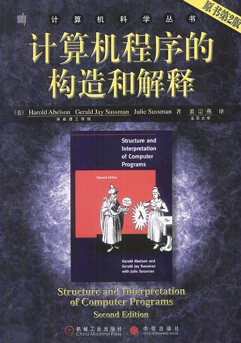对于这部分内容，我们的标准推荐是这部经典著作：《计算机程序的构造和解释》。在网络上，这本书既可供 免费阅读（英文版） ，也作为 MIT 的免费视频课程 。不过尽管这些视频课程很不错，我们对于视频课程的推荐实际上是 Brian Harvey 开设的 SICP 课程 （即 Berkeley 的 61A 课程）。比起 MIT 的课程，它更加完善，更适用于初学者。
中文翻译新增：
- 关于 SICP 国内视频观看地址
- Scheme 学习的相关资源参见： https://github.com/DeathKing/Learning-SICP
- 更多
- MIT 经典公开课（中英字幕）：https://www.bilibili.com/video/av8515129/
- 应该是伯克利 Scheme 版本最后一次公开课（英文字幕）：https://www.bilibili.com/video/av40460492/
- 伯克利 2018 年春课程（英文字幕，有部分字幕缺失）：https://www.bilibili.com/video/av20538548
- 伯克利 2019 年夏课程（中英字幕，中文机翻）：https://www.bilibili.com/video/av82503560
自从 2016 年首次发布这份指南以来，最常被问的一个问题是，我们是否推荐 John DeNero 讲授的 CS 61A 课程，以及配套的书籍 《Composing Programs》 ，这本书“继承自 SICP 但使用 Python 讲解”。我们认为 DeNero 的课程也很不错，有的学生可能更喜欢，但我们还是建议把 SICP、 Scheme 和 Brain Harvey 的视频课程作为首选。
为什么这么说呢？因为 SICP 是独一无二的，它可以 – 至少很有可能 – 改变你对计算机和编程的基本认识。不是每个人都有这样的经验，有的讨厌这本书，有的人看了前几页就放弃了，但潜在的回报让它值得一读。
如果你觉得 SICP 过于难，试试 《Composing Programs》，如果还是不合适，那我们推荐《程序设计方法》（中文版，英文版）；如果你觉得 SICP 过于简单，那我们推荐 《Concepts, Techniques, and Models of Computer Programming》 ；如果读这些让你觉得没有收获，也许你应该先学习其他科目，一两年后再重新审视编程的理念。
新版原文删除了对 《Concepts, Techniques, and Models of Computer Programming》 一书的推荐，但这本书对各种编程模型有深入的见解，值得一读。所以译文中依然保留。 — 译者注
最后，有一点要说明的是：本指南不适用于完全不懂编程的新手。我们假定你是一个没有计算机专业背景的程序员，希望填补一些知识空白。事实上， 我们把“编程”章节包括进来只是提醒你还有更多知识需要学习。对于那些从来没有学过编程，但又想学的人来说，这份 指南 更合适。
计算机系统结构
计算机系统结构 – 有时候又被称为“计算机系统”或者“计算机组成” – 是了解软件底层的重要视角。根据我们的经验，这是自学的软件工程师最容易忽视的领域。
我们最喜欢是入门书是 《深入理解计算机系统》 ，典型的 计算机体系结构导论课程 会涵盖本书的 1-6 章。
我们喜爱《深入理解计算机系统》，因为它的实用性，并且站在程序员的视角。虽然计算机体系的内容比本书所涉及的内容多得多，但对于那些想了解计算机系统以求编写更快、更高效、更可靠的软件的人来说，这本书是很好的起点。
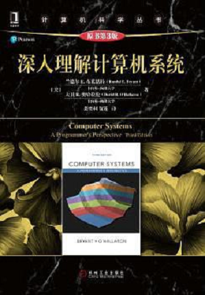 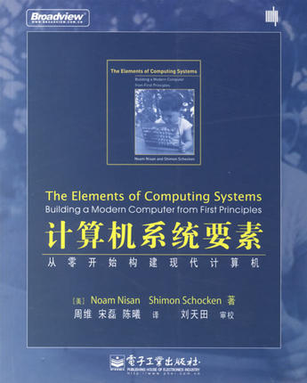对那些既想了解这个主题又想兼顾硬件和软件的知识的人来说，我们推荐 《计算机系统要素》，又名“从与非门到俄罗斯方块” （Nand2Tetris），这本书规模宏大，让读者对计算机内的所有部分如何协同工作有完全的认识。这本书的每一章节对应如何构建计算机整体系统中的一小部分，从用 HDL （硬件描述语言）写基本的逻辑门电路出发，途径 CPU 和汇编，最终抵达诸如俄罗斯方块这般规模的应用程序。
我们推荐把此书的前六章读完，并完成对应的项目练习。这么做，你将更加深入地理解计算机体系结构和运行其上的软件之间的关系。
这本书的前半部分（包括所有对应的项目）均可从 Nand2Tetris 的网站上 免费获得。同时，在 Coursera 上，这是一门 视频课程 。
为了追求简洁和紧凑，这本书牺牲了内容上的深度。尤其值得注意的是，流水线和存储层次结构是现代计算机体系结构中极其重要的两个概念，然而这本书对些几乎毫无涉及。
当你掌握了 Nand2Tetris 的内容后，我们推荐要么回到《深入理解计算机系统》，或者考虑 Patterson 和 Hennessy 二人所著的 《计算机组成与设计》，一本优秀的经典著作。这本书中的不同章节重要程度不一，因此我们建议根据 Berkeley 的 CS61C 课程 “计算机体系结构中的伟大思想”来着重阅读一些章节。这门课的笔记和实验在网络上可以免费获得，并且在 互联网档案 中有这门课程的过往资料。
硬件是平台。 – Mike Acton 在 CppCon 上的演说
算法与数据结构
正如几十年来的共识，我们认为，计算机科学教育所赋予人们的最大能量在于对常见算法和数据结构的熟悉。此外，这也可以训练一个人对于各种问题的解决能力，有助于其他领域的学习。
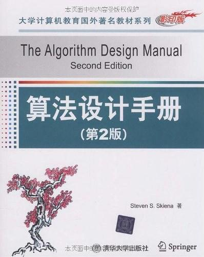 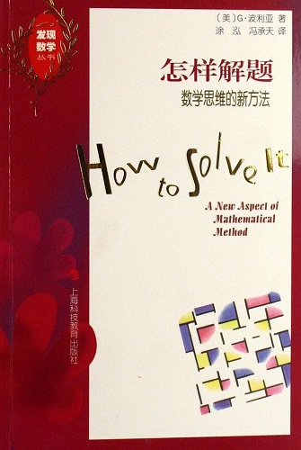关于算法与数据结构，有成百上千的书可供使用，但是我们的最爱是 Steven Skiena 编写的 《算法设计手册》 。显而易见，他对此充满热爱，迫不及待地想要帮助其他人理解。在我们看来，这本书给人一种焕然一新的体验，完全不同于那些更加经常被推荐的书（比如 Cormen，Leiserson，Rivest 和 Stein，或者 Sedgewick 的书，后两者充斥着过多的证明，不适合以解决问题为导向的学习）。
如果你更喜欢视频课程， Skiena 慷慨地提供了他的课程 。此外，Tim Roughgarden 的课程也很不错，在 Stanford 的 MOOC 平台 Lagunita ，或者 Coursera 上均可获得。Skiena 和 Roughgarden 的这两门课程没有优劣之分，选择何者取决于个人口味。
至于练习，我们推荐学生在 Leetcode 上解决问题，Leetcode 上的问题往往有趣且带有良好的解法和讨论。此外，在竞争日益激烈的软件行业，这些问题可以帮助你评估自己应对技术面试中常见问题的能力。我们建议大约 100 道随机挑选的 Leetcode 问题，作为学习的一部分。
最后，我们强烈推荐 《怎样解题》 ，这本书极为优秀且独特，指导人们解决广义上的问题，因而一如其适用于数学，它适用于计算机科学。
我可以广泛推荐的方法只有一个： 写之前先思考。 – Richard Hamming
数学知识
从某个角度说，计算机科学是应用数学的一个“发育过度”的分支。尽管许多软件工程师试图 – 并且在不同程度上成功做到 – 忽视这一点，我们鼓励你用学习来拥抱数学。如若成功，比起那些没有掌握数学的人，你将获得巨大的竞争优势。
对于计算机科学，数学中最相关的领域是“离散数学”，其中的“离散”与“连续”相对立，大致上指的是应用数学中那些有趣的主题，而不是微积分之类的。由于定义比较含糊，试图掌握离散数学的全部内容是没有意义的。较为现实的学习目标是， 了解逻辑、排列组合、概率论、集合论、图论以及密码学相关的一些数论知识 。考虑到 线性代数 在计算机图形学和机器学习中的重要性，该领域同样值得学习。
学习离散数学，我们建议从 László Lovász 的课程笔记 开始。Lovász 教授成功地让这些内容浅显易懂且符合直觉，因此，比起正式的教材，这更适合初学者。
对于更加高阶的学习，我们推荐 《计算机科学中的数学》 ，MIT 同名课程的课程笔记，篇幅与书籍相当（事实上，现已出版）。这门课程的视频同样可 免费获得 ，是我们所推荐的学习视频。
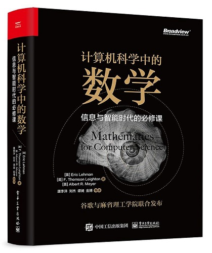对于线性代数，我们建议从 Essence of linear algebra 系列视频开始，然后再学习 Gilbert Strang 的 《线性代数导论》 和 视频课程 。
如果人们不相信数学是简单的，那么只能是因为他们没有意识到生活有多么复杂。 — John von Neumann
操作系统
《操作系统概念》 （“恐龙书”）和 《现代操作系统》 是操作系统领域的经典书籍，二者都因为写作风格和对学生不友好而招致了一些批评。
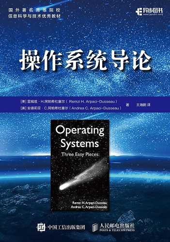《操作系统导论》 （Operating Systems: Three Easy Pieces） 是一个不错的替代品，并且可在网上 [免费获得（英文版）](http://pages.cs.wisc.edu/~remzi/OSTEP/。我们格外喜欢这本书的结构，并且认为这本书的习题很值得一做。
在读完《操作系统导论》后，我们鼓励你探索特定操作系统的设计。可以借助 “{OS name} Internals” 风格的书籍，比如 [Lion’s commentary on Unix](https://www.amazon.com/Lions-Commentary-Unix-John/dp/1573980137/， [The Design and Implementation of the FreeBSD Operating System](https://www.amazon.com/Design-Implementation-FreeBSD-Operating-System/dp/0321968972/，以及 [Mac OS X Internals](https://www.amazon.com/Mac-OS-Internals-Systems-Approach/dp/0321278542/)。对于 Linux ，我们推荐 Robert Love 的 《Linux 内核设计与实现》。
为了巩固对操作系统的理解，阅读小型系统内核的代码并且为其增加特性是一个很不错的方法。比如 xv6 ，由 MIT 的一门课程所维护的从 Unix V6 到 ANSI C 和 x86 的移植，就是一个很棒的选择。《操作系统导论》有一个附录，记载了一些可能的 xv6 实验项目，其中关于潜在项目的很棒想法。
计算机网络
鉴于有那么多关于网络服务端和客户端的软件工程，计算机网络是计算机科学中价值最为“立竿见影”的领域之一。我们的学生，系统性的学习了计算机网络，最终能够理解那些曾困扰他们多年的术语、概念和协议。
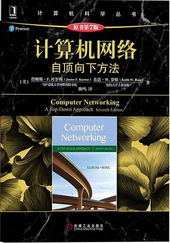在这一主题上，我们最爱的书籍是 《计算机网络：自顶向下方法》。书中的小项目和习题相当值得练习，尤其是其中的“Wireshark labs”（这部分在 网上可以获得）。
如果更喜欢视频课程，我们推荐 Stanford 的 Introduction to Computer Networking ，可在他们的 MOOC 平台 Lagunita 上免费观看。
对于计算机网络的学习，做项目比完成小的习题更有益。一些可能的项目有： HTTP 服务器，基于 UDP 的聊天 APP ，迷你 TCP 栈，代理，负载均衡器，或者分布式哈希表。
你无法盯着水晶球预见未来，未来的互联网何去何从取决于社会。 – Bob Kahn
数据库
比起其他主题，自学数据库系统需要更多的付出。这是一个相对年轻的研究领域，并且出于很强的商业动机，研究者把想法藏在紧闭的门后。此外，许多原本有潜力写出优秀教材的作者反而选择了加入或创立公司。
鉴于如上情况，我们鼓励自学者大体上抛弃教材，而是从 2015 年春季学期的 CS 186 课程 （Joe Hellerstein 在 Berkeley 的数据库课程）开始，然后前往阅读论文。
对于初学者，有一篇格外值得提及的论文：“Architecture of a Database System”。这篇论文提供了独特的对关系型数据库管理系统（RDBMS）如何工作的高层次观点，是后续学习的实用梗概。
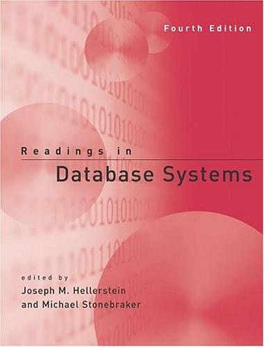 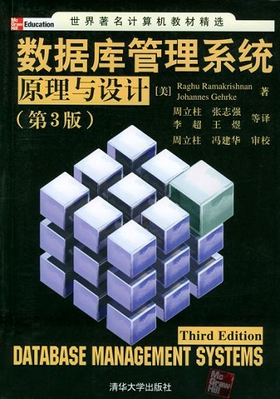《Readings in Database Systems》，或者以 数据库“红书” 更为人知，是由 Peter Bailis，Joe Hellerstein 和 Michael Stonebraker 编纂的论文合集。对于那些想要在 CS 186 课程的水平更进一步的学习者，“红书”应当是下一步。
如果你坚持一定要一本导论教材，那我们推荐 Ramakrishnan 和 Gehrke 所著的 《数据库管理系统：原理与设计》。如需更深一步，Jim Gray 的经典著作 《Transaction Processing: Concepts and Techniques》 值得一读，不过我们不建议把这本书当作首要资源。
如果没有编写足够数量的代码，很难巩固数据库理论。CS 186 课程的学生给 Spark 添加特性，倒是不错的项目，不过我们仅仅建议从零实现一个简单的关系型数据库管理系统。自然，它将不会有太多的特性，但是即便只实现典型的关系型数据库管理系统每个方面最基础的功能，也是相当有启发的。
最后，数据模型往往是数据库中一个被忽视的、教学不充分的方面。关于这个主题，我们推荐的书籍是 Data and Reality: A Timeless Perspective on Perceiving and Managing Information in Our Imprecise World。
编程语言与编译器
多数程序员学习编程语言的知识，而多数计算机科学家学习编程语言相关的知识。这使得计算机科学家比起程序员拥有显著的优势，即便在编程领域！因为他们的知识可以推而广之：相较只学习过特定编程语言的人，他们可以更深入更快速地理解新的编程语言。
我们推荐的入门书是 Bob Nystrom 所著的优秀的 Crafting Interpreters，可在网上免费获取。这本书条理清晰，富有趣味性，非常适合那些想要更好地理解语言和语言工具的人。我们建议你花时间读完整本书，并尝试任何一个感兴趣的“挑战”。
另一本更为传统的推荐书籍是 《编译原理》，通常称为“龙书”。不幸的是，这本书不是为自学者而设计的，而是供教师从中挑选一些主题用于 1-2 学期的教学。
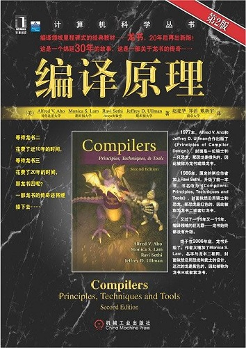如果你选择使用龙书进行自学，你需要从中甄选主题，而且最好是在导师的帮助下。我们建议依据某个视频课程来设定学习的结构，然后按需从龙书中获取深入的内容。我们推荐的在线课程是 Alex Aiken 在 MOOC 平台 edX 所开设的。
不要做一个只写样板代码的程序员。相反，给用户和其他程序员创造工具。从纺织工业和钢铁工业中学习历史教训：你想制造机器和工具，还是操作这些机器？ — Ras Bodik 在他的编译器课程伊始
分布式系统
随着计算机在数量上的增加，计算机同样开始 分散。尽管商业公司过去愿意购买越来越大的大型机，现在的典型情况是，甚至很小的应用程序都同时在多台机器上运行。思考这样做的利弊权衡，即是分布式系统的研究所在，也是越来越重要的一项技能。
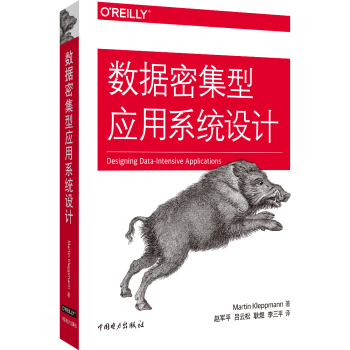我们推荐的自学参考书是 Martin Kleppmann 的 《数据密集型应用系统设计》。与传统的教科书相比，它是一本为实践者设计的具有很高的可读性的书，并且保持了深度和严谨性。
对于那些偏爱传统教材，或者希望可以从网上免费获取的人，我们推荐的教材是 Maarten van Steen 和 Andrew Tanenbaum 所著的 《分布式系统原理与范型》（中文第二版，英文第三版）。
对于喜欢视频课程的人，MIT 的 6.824 是一门很好的在线视频课程，由 Robert Morris 教授的研究生课程，在这里可以看到课程安排。
不管选择怎样的教材或者其他辅助资料，学习分布式系统必然要求阅读论文。这里 有一个不错的论文清单，而且我们强烈建议你出席你当地的 Papers We Love （仅限美国）。
FAQ 常见问题解答
这份指引的目标受众是？
我们面向自学的软件工程师、培训班学生、“早熟的”高中生或者想要通过自学补充正式教育的大学生。关于何时开启这段自学旅程，完全取决于个人，不过多数人在有一定的职业经历后深入学习计算机科学理论会获益匪浅。比如，我们注意到，如果学生在工作中曾经使用过数据库，他们会 喜爱学习数据库系统课程；如果学生从事过一两个 Web 项目，他们会喜爱学习计算机网络。
人工智能/计算机图形学/XX 主题怎么样？
我们试图把计算机科学主题清单限制到那些我们认为 每一个软件工程师 都应该了解的内容，不限于专业或行业。拥有了这些基础，你将能更加轻松地挑选教材或论文，然而无需指引地学习核心概念。在这里，我们给出一些其他常见主题的自学起点：
- 人工智能：通过观看视频并完成 Pacman 项目来学习 Berkeley 的 AI 课程。至于教材，使用 Russell 和 Norvig 编写的 《人工智能：一种现代方法》。
- 机器学习：学习吴恩达在 Coursera 上的课程。耐心学习，先确保理解了基础概念再奔向类如深度学习的诱人新主题。
- 计算机图形学：学习 Berkeley CS 184 课程 的材料，使用 《计算机图形学：原理及实践》 作为教材。
一定要严格遵守推荐的学习次序吗？
事实上，所有主题之间都有一定程度的重叠，彼此循环引用。以离散数学和算法的关系为例：先学习数学可以帮助你更深入地分析和理解算法，然而先学习算法可以为学习离散数学提供更大的动力和应用背景。理想情况下，你将在你的职业生涯多次重温二者。
因此，我们所推荐的次序主要是为了帮助你起步……如果你出于某种强烈的原因而倾向以不同的顺序学习，那也没有关系，勇敢开始吧！不过在我们看来，最重要的“先决条件”是：先学计算机体系结构再学操作系统或数据库，先学计算机网络和操作系统再学分布式系统。
和其他指引比起来，这份指引？
aka. Open Source Society、freeCodeCamp curricula
OSS 指引 涵盖太多主题，在许多主题中推荐劣质资源，没有就特定课程哪些方面有价值提供原因或指引。我们努力对这份指引中的课程加以限制，仅仅包括那些你作为软件工程师 确实需要了解的，不论你的专业方向，并且对每门课程为何必要做出了解释以帮助你理解。
FreeCodeCamp 主要关注编程，而不是计算机科学。至于你为什么要学习计算机科学，参见上文。如果你是个新手，我们建议先学 freeCodeCamp 的课程，一两年后再回归本指南。
XX 编程语言怎么样？
学习一门特定的编程语言和学习计算机科学的一个领域 完全不在一个维度 —— 相比之下，学习语言容易且缺乏价值。如果你已经了解了一些语言，我们强烈建议遵照我们的指引，然后在学习的空当中习得语言，或者暂且不管以后再说。如果你已经把编程学得不错了（比如学完了 《计算机程序的构造和解释》），尤其是如果你学习过编译器，那么面对一门新的语言，你只需要花一个周末稍多的时间即可基本掌握，之后你可以在工作中学习相关的类库/工具/生态。
XX 流行技术怎么样？
没有任何一种技术的重要程度可以达到学习其使用足以成为计算机科学教学的核心部分。不过，你对学习那门技术充满热情，这很不错。诀窍是先从特定的技术回退到基本的领域或概念，判断这门流行技术在技术的宏观大局中位于何处，然后才深入学习这门技术。
为什么你们还在推荐 SICP?
先尝试读一下，有些人觉得 SICP 让人神魂颠倒，这在其他书很少见。如果你不喜欢，你可以尝试其他的东西，也许以后再回到 SICP。
为什么你们还在推荐龙书？
龙书依旧是内容最为完整的编译器单本书籍。由于过分强调一些如今不够时新的主题的细节，比如解析，这本书招致了恶评。然而事实上，这本书从未打算供人一页一页的学习，而仅仅是为了给教师准备一门课程提供足够的材料。类似地，自学者可以从书中量身按需挑选主题，或者最好依照公开课授课教师在课程大纲中的建议。
如何便宜获取教材？
我们所建议的许多教材在网上都可以免费获得，这多亏了作者们的慷慨。对于那些不免费的书籍，我们建议购买旧版本的二手书籍。广而言之，如果一本教材有多个版本，旧版本大概率是完全足够使用的。即便新版本的价格是旧版本的 10 倍，新版本也绝不可能比旧版本好 10 倍！
中文翻译新增： 事实上，比起美国，在国内购买技术书籍可以说是相当“廉价”了。如果仍旧寻求更加便宜的购买渠道，可以参考这篇 V2EX 上的 讨论帖子，其中提到了一些不错的购买渠道。
这份指引是谁写的？
这份指引由 Bradfield School of Computer Science （旧金山）的两位教员： Ozan Onay 和 Myles Byrne 编写，并由 Oz 于 2020 年更新。这份指引基于我们对数千名自学成才的工程师和培训班学生教授计算机科学基础的经验。感谢我们所有学生对自学资源的持续反馈。
只要有足够的时间和动力，我们非常有信心，你可以自学完以上所有课程。如果你喜欢一个集中式、结构化、由教师指导的课程，你可能对我们的 计算机科学强化班 感兴趣。我们 不建议 你去攻读硕士学位。
这份指引是谁翻译的？
这份指引的中文翻译是 社区共同贡献的成果，我们欢迎任何反馈和改进！